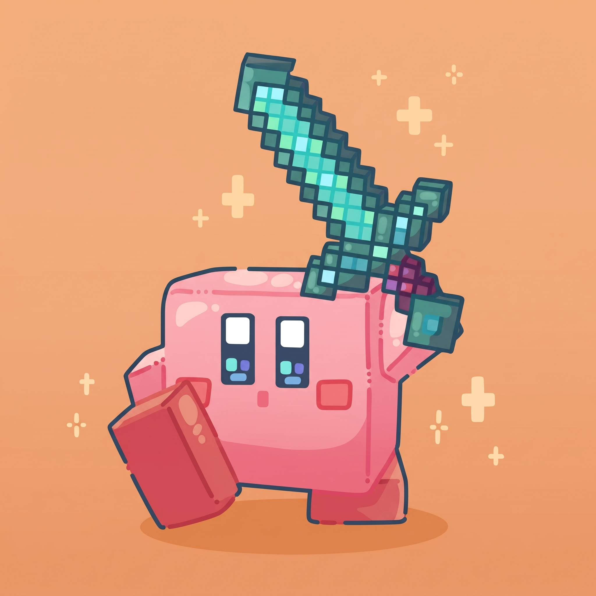

Exploring the Depths of Minecraft

Building and exploring in a sandbox world opens up endless creative possibilities. When you venture deep underground, every single shadow can hide a surprise, making survival strategy essential for success. Setting up a proper base camp with adequate lighting is your best defense against creeping mobs.
As your architecture skills improve, you can start constructing massive castles, bridges, and automated farms. The key is taking it one block at a time while keeping your resources organized in storage chests.